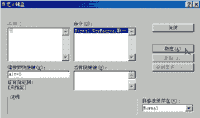

|
|
| 当前位置：电脑报电子版 > 1999 年 > 39 期 > OA专刊 > 掀起Word的“宏”盖头 |
| 《 掀起Word的“宏”盖头 》 |
| 学过DOS的人都知道DOS下有一个批处理命令。可以这样说，Word中的“宏”就相当于DOS下的批处理。“宏”就是一系列预定的操作步骤的记录，执行“宏”就是Word按“宏”中记录的顺序自动执行各种操作。“宏”的本质就是一段Visual Basic代码。它的作用一是化繁为简、压缩步骤（类似DOS中的批处理）；二是开放系统、扩展功能，完成Word中某些不能直接完成的任务。我们知道，Visual Basic是Office的开发语言，当然也是Word中的编程语言。因此，当我们在Word中创建了一个宏时，事实上也就开发出了一条新的Word命令。我们可以针对工具按钮、菜单选项或快捷键来创建一个宏，也可以用Visual Basic来书写或修改一个宏，最后我们还可以执行Word中带有的宏。 当然，“宏”编程属于Word中的高级应用技巧，它需要使用者有一定的编程知识。如果你原先对VB比较熟悉的话，那么编起“宏”来也不会太费气力，因为Word中的“宏”就是利用VBA（Visual Basic for Application）技术来组织编写的；如果你与我一样，是个涉“宏”不深者，那么请跟我一起来认识一下Word中的“宏”吧! 一、基础篇：初识Word“宏” 1. 记录“宏”：在Word中你至少有两种方法记录“宏”，即录制“宏”和编写“宏”。前者实际上是把使用者在录制期间的一切操作步骤按VB语句存储起来以形成命令（这无疑是初学者的首选）；而后者则是利用VB编辑器通过直接撰写Visual Basic语句来完成（若非高手，还是少动为妙）。总之，这两种方法你都可以在“工具”菜单的“宏”子菜单中找到。2.存储“宏”：首先需要解释两个名词：“全局宏”和“模板宏”。前者指的是存储在通用模板（Normal.dot）中的“宏”，它的存储几乎完全不用你操心，只要录制好以后你就可以随时使用了。而后者指的是储存在某些模板或文档中的“宏”，所以要存储这样一个“宏”，你必须在关闭模板前进行存盘：即选择“文件”中的“另存为” 菜单。 3. 运行“宏”：最原始的方法是单击“工具”/“宏”/“宏”，然后在“宏”窗口中选择你要运行的宏名，再单击“运行”。其实在大多数情况下，我们只须点击代表该“宏”的按钮或快捷键就行了。 4. 编辑“宏”：打开要编辑的“宏”所依附的模板，选择“工具”菜单中的“宏”命令，打开“宏”对话框，从“宏名”列表中选择要编辑的“宏”，再单击“编辑”按钮，在“宏”的编辑窗口中要删要减就看你的兴趣了。 现在，让我们来具体看看“宏”这个小东东是怎样完成Word中那么多令人咋舌的神奇功能的。 二、 入门篇：自动录制Word “宏” 在我们的工作中常会遇到这种情况：一些相同的内容总要在不同的文档中反复录入，比如单位的名称啦、自己的通讯地址啦等等，除了厌倦以外还常常给人一种浪费青春的感觉。不过你有没有想过使用Word中的“宏”，让它为你消除烦人的重复劳动。1. 新建一张空白文档，单击“工具”/“宏”/“录制新宏”，在出现对话框的“宏名”中给该宏起个名字，在这里我们命名为“联系地址”，然后将“将宏保存在”选项设为“所有文档”（见图1）； 2. 在“录制宏”的对话框中单击“将宏指定到”栏中的任一项，以将其指定到键盘或工具栏上，在这里我们选择“键盘”，如图2所示。我们在“请按新快捷键”栏中直接按下你想定义的新快键，在这里我们定为“Alt＋D”，然后我们顺击“指定”、“关闭”按钮； 3. 这时，你会发现窗口中又多了一个“宏”工具条，并且鼠标也变成了“磁带”状，它表明录制“宏”的工作现在开始！从此时直到你按下“停止录入宏”按钮之前的一切动作都将被“摄入”该宏中，你可要小心行事哦（见图3）。 4. 在文档中输入正文，比如“华中理工大学人文学院”，接着我们还可对其进行小小的编辑，用键盘（SHIFT＋左右方向键）选择正文，再用鼠标单击加粗和倾斜按钮，然后再按一下方向键取消选择，最后单击“宏”工具条上的停止按钮，鼠标恢复原状。 现在我高兴地祝贺你：一个完全由你包办的“宏”已正式诞生了，一个完全由你掌握的Word时代已正式来临了！不过，要真正把你的名字写进Word的开发者名录，你至少还得对以下“宏”的常识有所了解。 首先，我们必须弄清我们录制的“宏”究竟到哪里去了？其内容又是些什么？实际上，我们录制的“宏”是一段Microsoft Visual Basic程序，在Word中我们可以通过单击“工具”/“宏”/“宏”菜单，并单击弹出窗口中的“编辑”按钮即可（见图4）。其实，熟悉VB的朋友一眼就能看出，这是个和VB集成开发环境（IDE）非常相似的界面，我们在其窗口中可以十分清楚地查看到“宏”的源代码。还是以刚才的“联系地址宏”为例吧，它的代码就非常简单，让人一目了然。现在将它逐行解释，如图5中斜体字所示。 好了，到此为止我们算是对Word“宏”的轮廓有了一个大致的了解，不过你要想成为Word“宏”高手的话，还得继续学习。 三、 进阶篇：手工创建Word“宏” 虽然说用Word自身录制“宏”的方法简单易行，但运用这种方式所得到的“宏”是把用户所有的操作步骤都一一记录在案（包括误操作和修复错误），因此这种“宏”往往体积庞大，不易管理。所以要想成为真正的“宏”专家，手工编写“宏”代码将是你的必修科目。我们还是以实例来说明，比如说我们要对多处文字进行相同的格式调整：宋体、15磅大小、不加粗、倾斜、带下划线等，我们就可以通过编写一个“宏”来完成。 1. 打开“工具”之“宏”菜单中的“宏”窗口，在出现的“宏”栏中输入新“宏”名“格式调整”，再击“创建”； 2. 在系统打开的“MVB编辑器”中直接输入如下代码： If Selection.Type = wdSelectionIP Then MsgBox ″先选定文字！″ Else Selection.Font.Name = ″宋体″ Selection.Font.Size = 15 Selection.Font.Bold = flase Selection.Font.Italic = True Selection.Font.Underline = True End If 别看这些字符怪异而复杂，其实当你习惯之后，就会发现VB其实是一种非常体贴的语言：比如在你每次输完语句字头之后，系统都会将余下的步骤自动提示给你（见图6）。 现在，我们运行这个“宏”来试一试吧。先选定任一文字（如果不选定，系统会弹出“先选定文字！”对话框），再选择“工具”/“宏”/“宏”窗口中的“运行”按钮即可。怎么样，好玩吧! 四、 出师篇：随心所欲Word“宏” 当我们熟练掌握了VB的常用语句及语法习惯，那么Word在我们眼里将不再神秘。只要开动脑筋，勤于动手，我们每个人都可以是Word开发者，说不定2010版的OFFICE中就有你编写的模块呢。不信你瞧：比如我们想要Word增加一项新的本领：那就是当我们启动、关闭、新建、打开、关闭Word或Word文档时，让Word将这些动作的日期和时间都一一记录下来，并保存到我们指定的文件中去。 1. 打开“工具”之“宏”菜单中的“宏”窗口，在出现的“宏”栏中输入新“宏”名“记录本”，再击“创建”； 2. 在系统打开的“MVB编辑器”中直接输入如下代码： Sub autoexc() Dim username ′启动Word2000时，要求输入拥护名 username = InputBox(″请输入您的大名″) ′如果不输入 , 退出Word2000 If username = ″″ Then Application.Quit End If Application.username = username ′记录下运行Word2000的人及日期时间 Open ″e:记录本.log″ For Append As 1 Print ＃1, Application.username, ″exec″, Date＄, Time＄ Close ＃1 End Sub ′记录下退出Word2000的情况 Sub autoexit() Open ″e:记录本.log″ For Append As 1 Print ＃1, Application.username, ″exit″, Date＄, Time＄ Close ＃1 End Sub ′记录下新建一文件的情况 Sub autonew() Open ″e:记录本.log″ For Append As 1 Print ＃1, Application.username, ″new″, Date＄, Time＄ Close ＃1 End Sub ′记录下打开一文件的情况 Sub autoopen() Open ″e:记录本.log″ For Append As 1 Print ＃1, Application.username, ″open″, Date＄, Time＄ Close ＃1 End Sub ′记录下关闭一文件的情况 Sub autoclose() Open ″e:记录本.log″ For Append As 1 Print ＃1, Application.username, ″close″, Date＄, Time＄ Close ＃1 End Sub 这样，在每次启动时Word2000都会询问用户的姓名，并且在工作期间，每当你新建、打开、关闭以及在你退出Word时，该“宏”都会把这些操作的日期和时间记录“记录本”文件中去。当然，你也可以根据自己的情况对它进行必要的修改，如果事实证明测试成功，那么你就可以自豪地宣布，“我的电脑”使用的是“我的Word”；如果你的“宏”在运行中报错也没关系，只须点击“工具”/“宏”/“宏”选项，再在弹出窗口中用“单步运行”逐个测试就可以很容易地发现问题所在，改正后即可正常运行了。 当然，入门仅仅只是个开始，如何真正地把“宏”调教得得心应手，就需要你自己在实践中慢慢摸索了。 (湖北 魏 炜) |
| 下载本期推荐软件 | 页 首 |
| 《电脑报》版权所有，电脑报网站编辑部设计制作发布 |